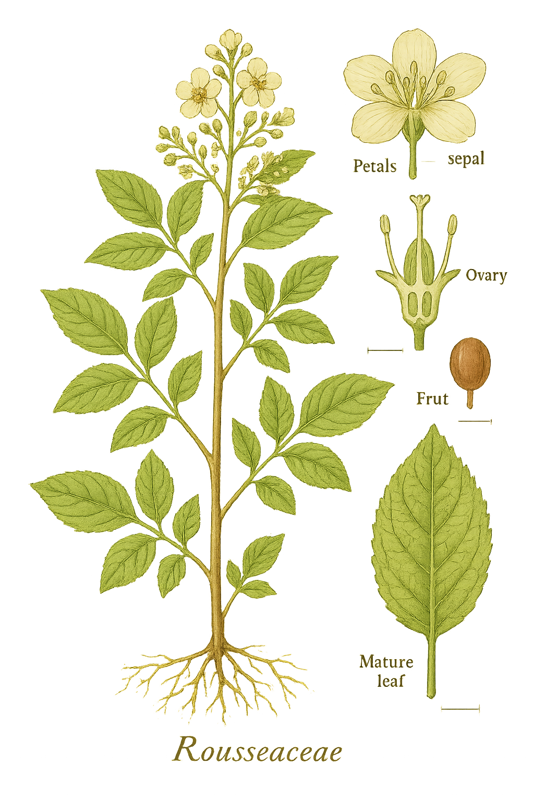

Rousseaceae
Roussea Family
Rousseaceae is a small family comprising four genera of shrubs, small trees, or lianas, with a fragmented distribution across the Southern Hemisphere (Mauritius, eastern Australia, New Zealand, New Guinea). Members typically have simple, alternate or opposite leaves with small stipules, and actinomorphic, 4- to 7-merous flowers. The fruit is a berry or capsule. Phylogenetically, it represents an early diverging lineage within the order Asterales, sister to the large Bellflower family (Campanulaceae sensu lato).
Overview
The Rousseaceae family, though small with only about 12-13 species, is notable for its interesting biogeography and phylogenetic position. Its four genera (Roussea, Abrophyllum, Carpodetus, Cuttsia) were previously placed in different families (like Escalloniaceae or Grossulariaceae) before molecular data revealed their close relationship and established them as a distinct family within the Asterales.
The family showcases a range of growth forms, from the liana Roussea simplex endemic to Mauritius (known for its unusual pollination by geckos attracted to nectar), to shrubs and small trees found in rainforests and woodlands of Australia, New Zealand, and New Guinea. This fragmented distribution across widely separated landmasses points to an ancient origin and subsequent vicariance or long-distance dispersal events.
As the sister group to the vast Campanulaceae (including Lobeliaceae), Rousseaceae provides insights into the early evolution of the Asterales order, bridging the gap between woody ancestral forms and the predominantly herbaceous members of its sister family.
Quick Facts
- Scientific Name: Rousseaceae
- Common Name: Roussea Family
- Number of Genera: 4 (Roussea, Abrophyllum, Carpodetus, Cuttsia)
- Number of Species: Approximately 12-13
- Distribution: Mauritius, E Australia, New Zealand, New Guinea.
- Evolutionary Group: Eudicots - Asterales
- Habitat: Rainforests, woodlands.
Key Characteristics
Growth Form and Habit
Shrubs, small trees, or lianas (woody climbers, e.g., Roussea).
Leaves
Leaves are simple, arranged alternately or oppositely. Leaf margins are typically toothed (serrate or dentate), sometimes entire. Small stipules are usually present, sometimes interpetiolar or intrapetiolar, often falling early.
Stems
Stems are woody.
Roots
Normal woody plant root system.
Sexuality and Inflorescence
Inflorescences are variable, often terminal or axillary cymes or panicles, or flowers may be solitary (Roussea). Flowers are usually perfect (bisexual).
Flowers
Flowers are actinomorphic (radially symmetrical), usually 4- or 5-merous, but sometimes up to 7-merous. Petals are often white, cream, yellow, or pinkish.
- Calyx: Consists of 4-7 sepals, which may be free or fused at the base, and are often persistent in fruit.
- Corolla: Consists of 4-7 petals, which are free and alternate with the sepals.
- Stamens: Consists of 4-7 stamens, free, positioned alternating with the petals. Anthers typically open via longitudinal slits.
- Ovary: Position is variable: superior (Roussea) or inferior (Abrophyllum, Carpodetus, Cuttsia). Composed of (2-)3-7 fused carpels, forming a multi-locular ovary. Placentation is usually axile (ovules attached to the central axis). Style may be single with a lobed stigma, or styles may be as many as the carpels and free or fused at the base.
Fruits and Seeds
The fruit type varies by genus: it is typically a fleshy berry (Roussea, Abrophyllum, Cuttsia) or a dry, loculicidal capsule (Carpodetus). Seeds are usually numerous and small.
Chemical Characteristics
Plants often contain iridoids, a class of secondary metabolites common in the Asterales and related orders.
Field Identification
Identifying Rousseaceae involves considering its habit, leaf features, flower structure, fruit type, and specific geographic distribution:
Primary Identification Features
- Habit: Shrub, small tree, or liana.
- Leaves: Simple, alternate or opposite, usually toothed, with small stipules.
- Flowers: Actinomorphic, 4-7 merous, with stamens alternating with petals.
- Ovary Position: Variable (superior in Roussea, inferior in others).
- Fruit: Berry or capsule.
- Distribution: Restricted to Mauritius, E Australia, New Zealand, New Guinea.
Secondary Identification Features
- Inflorescence Type: Cymes, panicles, or solitary flowers.
- Petal/Sepal Number: Often 4 or 5, but can be up to 7.
- Habitat: Typically rainforests or moist woodlands.
Seasonal Identification Tips
- Year-round Features: Habit and leaf characteristics (arrangement, margins, stipules/scars) are useful year-round.
- Flowering/Fruiting Season: Flowering often occurs in spring or summer, followed by fruit development. The type of fruit (berry vs. capsule) is a key identifier between genera.
Common Confusion Points
Members of Rousseaceae might be confused with plants from other families previously associated with them or occurring in similar habitats:
- Escalloniaceae: Shrubs/trees often with alternate, toothed leaves and flowers in racemes/panicles. Distinguished by belonging to a different order (Escalloniales) and differences in floral details (e.g., ovary structure, disc presence).
- Pittosporaceae: Shrubs/trees often with alternate leaves. Distinguished by usually having 5-merous flowers with superior ovaries and fruit typically a capsule or berry often with sticky pulp around seeds. Different order (Apiales).
- Cunoniaceae: Trees/shrubs often with opposite, frequently compound leaves and interpetiolar stipules. Flowers usually small with numerous stamens. Different order (Oxalidales).
- Campanulaceae (sensu lato): Sister family, but mostly herbaceous (though some woody members exist, especially in Lobelioideae). Flowers often zygomorphic (esp. Lobelioideae), typically with inferior ovaries and specialized pollen presentation mechanisms.
The combination of simple (usually toothed) leaves with small stipules, 4-7 merous flowers with stamens alternating petals, berry or capsule fruit, and the specific fragmented Southern Hemisphere distribution helps identify Rousseaceae.
Field Guide Quick Reference
Look For:
- Shrub/tree/liana
- Leaves simple, alt/opp, usually toothed
- Small stipules present
- Flowers actinomorphic, 4-7 parts
- Stamens (4-7) alternate petals
- Ovary superior or inferior
- Fruit a berry or capsule
- Distribution: Aus/NZ/NG/Mauritius
Key Variations:
- Habit (shrub/tree vs liana)
- Leaf arrangement (alt vs opp)
- Ovary position (sup vs inf)
- Fruit type (berry vs capsule)
Notable Examples
The four genera show the diversity within this small family:

Roussea simplex
(No common name)
A woody liana endemic to the island of Mauritius. Unique for its large, bell-shaped, yellowish flowers pollinated by geckos (Phelsuma spp.) attracted to copious nectar, and its fleshy berry fruit. Has a superior ovary.

Abrophyllum ornans
Native Hydrangea
A shrub or small tree native to rainforests of eastern Australia. Characterized by large, opposite, prominently toothed leaves and terminal panicles of small, yellowish flowers. Fruit is a small black berry. Has an inferior ovary.

Carpodetus serratus
Putaputaweta, Marbleleaf
A small tree native to New Zealand, known for its distinct juvenile form with tangled branches and small leaves, maturing into a tree with larger, alternate, toothed leaves often mottled (marbleleaf). Produces panicles of small white flowers and fruit is a dry capsule (unlike other genera). Has an inferior ovary.
Phylogeny and Classification
Rousseaceae belongs to the large eudicot order Asterales, which also includes major families like Asteraceae (sunflowers), Campanulaceae (bellflowers), Menyanthaceae (bogbeans), and Goodeniaceae.
Molecular phylogenetic studies have robustly placed Rousseaceae as the sister group to Campanulaceae sensu lato (which includes the traditionally separate Lobeliaceae). This means Rousseaceae represents the earliest diverging lineage within the clade that contains these two families. Its members retain some potentially ancestral features for this part of the Asterales tree, such as the woody habit (common in Roussea, Abrophyllum, Carpodetus, Cuttsia) compared to the predominantly herbaceous nature of Campanulaceae.
Position in Plant Phylogeny
- Kingdom: Plantae
- Clade: Angiosperms (Flowering plants)
- Clade: Eudicots
- Clade: Asterids
- Order: Asterales
- Family: Rousseaceae
Evolutionary Significance
Rousseaceae, despite its small size, is important for understanding the evolution of Asterales:
- Basal Position: As sister to the large Campanulaceae clade, it provides crucial insights into the ancestral traits and early diversification of this major branch of the Asterales.
- Habit Evolution: Its predominantly woody habit contrasts with the mostly herbaceous Campanulaceae, informing hypotheses about transitions between woody and herbaceous forms within the order.
- Biogeography: The fragmented Southern Hemisphere distribution (Mauritius, Australasia) suggests an ancient origin, possibly Gondwanan, and raises questions about vicariance versus long-distance dispersal in shaping the family's current range.
- Pollination Biology: Roussea simplex offers a rare example of pollination by terrestrial vertebrates (geckos) within the Asterales.